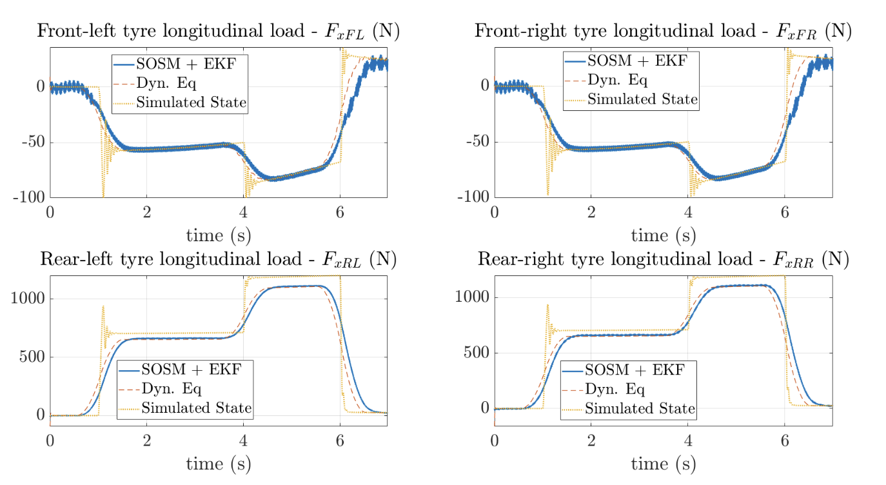
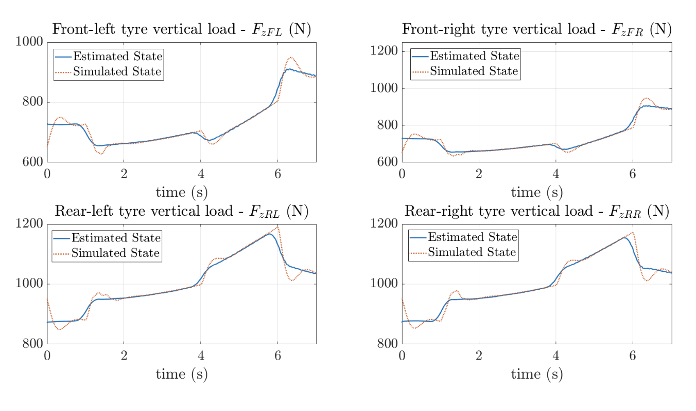
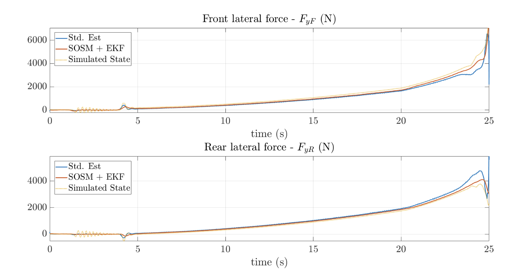
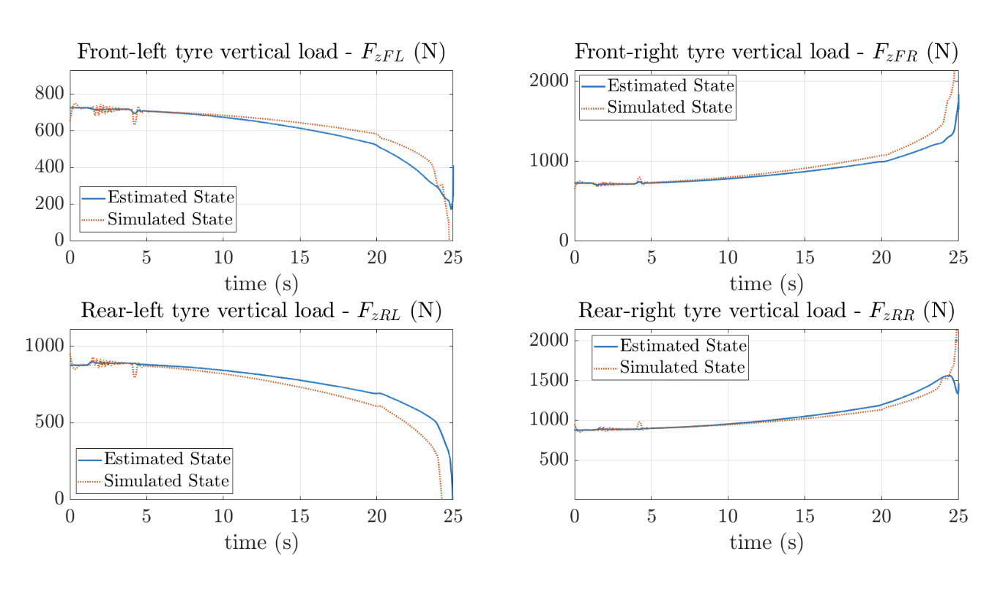

Tire Force Estimation
Now, the tire force estimator can be presented. However, before talking about the out-and-out estimators, the torque at the wheels has to be computed.
Wheels Torque Estimation
The wheel torque is the sum of the motor and the braking torque. For what concerns the motor torque, it is measured by the inverters and it is reported to the wheel torque by a simple multiplication by the reduction rate and the reducer efficiency (look at equation ??).
The braking torque, instead, is not directly measured. The available measure is on the pressure of the braking oil circuits \(\left(P_{s}\right)\), different for the front and the rear. Having this pressure, an analysis regarding the braking system must be done.
Firstly, the braking system configuration must be known. In the vehicle, the CRG V04 brake callipers are mounted, with four pistons having a diameter \(\phi_{P}=26 \mathrm{~mm}\). The main dimensions of the callipers are shown in figure 12. Secondly, the force that the pads generate perpendicular to the braking disk \(\left(F_{p}\right)\) can be computed using equation 33. where \(n\) is the number of pistons in the calliper and \(A_{p}\) is the pistons area.
Finally, having the perpendicular force, it is possible to compute the maximum friction force acting on the disk, hence, also the maximum braking torque.
where \(\mu_{s}\) is the friction coefficient between the disk and the pads - it is assumed to be equal to \(0.42\) - and \(b\) is the friction force arm, indicated in figure 12 .
A threshold value has to be set in the measured pressure for the two circuits. This pressure is needed to overcome the pistons spring resistance.
Tire Longitudinal Force via Dynamical Equation
Once the wheel torques are computed, the tire forces can be estimated starting from them. The tire forces estimation problem is divided into three main sub-problems: longitudinal, lateral and vertical force estimation. In this section, some methods are introduced to solve these.
Let's start talking about the longitudinal force \(\left(F_{x}\right)\). The simpler way to estimate the longitudinal force is to use the wheel spin dynamics equation - equation ?? -. In this way, the longitudinal tyre forces are the results of a simple open-loop computation. However, this computation can discard some unmodelled effects. Besides, it includes the numerical derivation of the wheel speed. This means that this data has to be strongly "cleaned" in order to avoid numerical noise generation in the derivative computation. However, if the wheel speed data is sufficiently filtered, the open-loop force computation can give a sufficiently good approximation of the real tire forces, at least in acceleration.
where \(I_{a, W}\) is the wheel spin inertia, \(T_{w}\) is the wheel torque due to motor (mot) and bracking (brk) and \(R\) is the wheel radius.
Axle Lateral Force via Steady-State Analysis
For what concerns the lateral force estimation \(\left(F_{y}\right)\), at this stage, it is impossible to have a lateral force value for the four wheels. This because, without sufficient vehicle knowledge, there are no descriptions for the single tire lateral dynamics. Therefore, our analysis focuses on the lateral axles forces. The simplest way to estimate these forces is to remains in the steady-state condition - relation 37 - . This is a strong assumption but, in practice, the steady-state results can give a good approximation of the real axle forces.
where \(M\) is the whole vehicle mass, \(a_{y}\) is the lateral acceleration, \(L\) is the vehicle wheelbase and \(L_{F}\) and \(L_{R}\) is the CoM distance from the front and the rear axle respectively. Even if the steady-state description gives a good level of accuracy, it can be expanded considering also the yaw moments \(\left(M_{z}\right)\) generated by a differential wheel torque, by the self-aligning torque or by the yaw-rate variation \((\dot{\Omega})\).
Since the self-aligning torques are difficult to be measured with the employed sensors, their effects are neglected. However, the differential torque and the yaw-rate variation are still considered.
Vertical Tire Load via Load Transfer
The vertical load can be computed using the load transfer theory, presented in relations ?? and ??. As already said, this convention divides the vertical forces into two main contributes: the fist one contains the static and the aerodynamic forces and the longitudinal load transfer; the second one includes the lateral load transfer.
As far as the aerodynamic force contribute, they are computed according to equation ?? - \(F_{z A R}=C_{A z R} u^{2}\) and \(F_{z A F}=C_{A z F} u^{2}-\)-. The aerodynamic coefficients are extrapolated thanks to aerodynamic simulation. Their values are reported in table 5 .
| \(C_{A x}\) | \(C_{A z F}\) | \(C_{A z R}\) |
|---|---|---|
| \(1.56\) | \(0.64\) | \(0.92\) |
Table 5: Aerodynamic coefficients - \(N s^{2} / \mathrm{m}^{2}\)
The lateral forces are computed using the expression 38 that consider also the transient yaw contribute. The roll angle \(\phi\), instead, is computed using the steady-state formulation. It involves the roll stiffness \(\left(K_{\phi}\right)\) definition in order to evaluate the roll angle.
where the roll stiffnesses are a function of the total suspension/tire stiffness \(\left(K_{z}\right)\). This stiffness is computed as a spring series. This is an approximation but this method is shown valid for simulation. Then, the roll stiffness can be defined as follow:
Also, the pitch angle \(\theta\) can be estimated in steady-state using the definition of Anti-Dive \((A D)\), Anti-Lift \((A L)\) and Anti-Squat \((A S)\) coefficients. These coefficients determine how much of the longitudinal load transfer is adsorbed by the suspension structure and how much by the suspension deformation. Anti-Dive reefers to the front suspensions, Anti-Lift and Anti-Squat to the rear ones depending on the condition of the suspensions: stretching or compressing.
The computation of the pitch angle is reported in relation 40 .
where
Longitudinal and Lateral Force via S-SOSM and KF
An alternative method for the longitudinal and lateral force estimation is the combination of a Suboptimal-Second Order Sliding Mode (S-SOSM) observer and a Kalman filter, presented in [17] and used also in [21]. The S-SOSM is used as a virtual sensor for the force estimation while the Kalman filter is used to smooth the observer output. The S-SOSM-based force observer is divided into three main parts: longitudinal force observer, lateral force observer and wheel torque adaption.
Longitudinal Tire Force Observer
The longitudinal force \(\left(F_{x i j}\right)\) observer is based on a slightly modified version of the wheel rotation dynamic equation (??) which includes a correcting term \(\left(\Delta \hat{T}_{i j}\right)\) (see 41 .
where \(\hat{\omega}_{i j}\) is the wheel speed obtained from the observer evolution and \(u_{x i j}\) is the observer output and corresponds to the estimated longitudinal force \(\left(\hat{F}_{x i j}^{S M}\right)\).
The measured and the observed wheel speed are used to generate a sliding surface \(\left(\sigma_{x i j}=\omega_{i j}-\hat{\omega}_{i j}\right)\) in which the SOSM is developed. The observer input law is reported in relation 42 .
\(\sigma_{x, \text { Max }}\) is the value in of \(\sigma_{x}\) in the last time instant and \(K_{x}\) is a tunable gain.
Using expression 41 with the input law 42 , the wheel spin derivatives can be found without any numerical derivation. Then, the observed wheel speed can be found integrating the \(\dot{\hat{\omega}}_{i j}\).
Lateral Axle Force Observer
In this case, only one sliding mode observer is sufficient, that aims to estimate the front or the rear axle force. The non-estimated axle force is computed using the lateral equilibrium \(-M a_{y}=F_{y F[v]}+F_{y R[v]}\) where the indicator \([v]\) means that the forces are projected in the vehicle reference frame \(-\).
The sliding surface is now based on the yaw-rate dynamic equation - expression 43 - written around the front axle centre point and the sliding surface is defined as the difference between the measured yaw rate and the estimated one \(\left(\sigma_{y}=\Omega-\hat{\Omega}\right)\).
In the reported formulation, \(u_{y}\) is the input law that corresponds to the estimated rear lateral axle force in the vehicle reference frame \(\left(F_{y R[v]}^{S M}\right)\).
The terms \(\Delta \hat{F}_{x j[v]}\) corresponds to the difference between the left and the right tire forces and is the cause of a yaw moment. In order to compute these terms, the force projection in the vehicle RF must occur.
The input law, in this case, is
Wheel torque adaption
The correction term introduced in the expression 41 is a Proportional-Integral (PI) adaptive law which considers the longitudinal error dynamics.
The error-dynamics is computed using the deviation from the longitudinal equilibrium \(-M a_{x}=\sum F_{x}-\)
where \(F_{\text {Res }}\) is the sum of all the resistance forces - for example, aerodynamic drag and rolling resistance effects - and \(\hat{F}_{x i j[v]}^{S M}\) are the longitudinal tire forces, which are computed as follow.
The total \(\Delta \hat{T}\) term, obtained by equation 45 , is split among the four wheels depending on the driving situation. Moreover, if a negligible torque is applied to a specific wheel, the torque correction is null.
For a rear-wheel-driven vehicle, the torque splitting is the following.
where the vertical forces are computed according to ?? and \(\epsilon_{b r k}\) is the front braking balance, i.e. it said how much braking torque is applied at the front with respect to the total one - in our case, it is equal to \(0.6\)-. \(a_{t h}\) is a threshold acceleration that is set equal to \(0.5 \mathrm{~m} / \mathrm{s}^{2}\) in our case.
Kalman Filter Smoothing
The observer outputs are taken as input from an Extended Kalman filter.
The implemented here Kalman filter is based on the wheel spin equations - equation ?? - and on the vehicle yaw dynamics around the centre point of the front axle - already used in \(43-\)
The filter states, collected in the vector \(x\), are indicated with the hat only, while the outputs of the observer have the hat indicator and the superscript "SM". The measured quantities and the data do not have any indicator.
The vector \(z\) collects the set of all the measures, virtual or not, and the vector \(u\) contains the system inputs.
\(\delta_{F}\) is the mean of the left and right steering angle.
The process and output evolution are vectorial functions reported in 49 . The process and measurement noise (\(v\) and \(w\)) are assumed to be zero-mean and normal distributed with covariance matrices equal to \(Q\) and \(R\) respectively - \(v \sim N(0, Q)\) and \(w \backsim N(0, R)\) -. The measurement vector and the state vector contain the same quantities. For this reason, deriving the function \(h(\cdot)\) with respect to the state, the identity matrix will return \((H=I)\).
The matrix \(F\) is obtained deriving the function \(f(\cdot)\) with respect to the system states.
where
This algorithm has to be properly tuned to have good performances. The tuning procedure is performed by means of trial and error approach starting from the values proposed in [21]. The optimized values can be found in table 6
| \(K_{x}\) | \(K_{y}\) | \(\sigma_{x / y, ext { Max }}\) | \(K_{P}\) | \(K_{I}\) |
|---|---|---|---|---|
| \(3 \cdot 10^{5}\) | \(3 \cdot 10^{5}\) | 0 | \(5 \cdot 10^{-2}\) | \(1 \cdot 10^{-3}\) |
| \(Q_{F_{x}}\) | \(Q_{F_{y}}\) | \(Q_{a_{y}}\) | \(Q_{\omega}\) | \(Q_{\Omega}\) |
|---|---|---|---|---|
| \(26.03\) | \(7.68\) | \(8.93\) | \(93.28\) | \(77.86\) |
| \(R_{F_{x}}\) | \(R_{F_{y}}\) | \(R_{a_{y}}\) | \(R_{\omega}\) | \(R_{\Omega}\) |
|---|---|---|---|---|
| 600 | 500 | \(0.785\) | \(0.1\) | \(4 \cdot 10^{-2}\) |
Table 6: Parameters for the S-SOSM observer with EKF enhancement
A high value for the parameters \(K_{x / y}\) allows us to have a faster convergence to the actual value but it causes chattering in the force estimation. The Kalman filter sees the observer outputs as a noisy signal and it is able to clean the data avoiding the chattering. In this way, the observer gains can be high to favour a fast convergence rate.
Algorithms Performances
To conclude the analysis regarding force estimation, a qualitative performance analysis must be done. In particular, the results will be shown in two simulated pure conditions: using a simulated double throttle step, the performance of the longitudinal force estimators are highlighted while, with a simulated constant steering angle tests, the performances of the axle lateral force observers are illustrated. The vertical load are reported in both situations to see how the load transfer performs in both cases.
Firstly, the acceleration results are considered. In figure 13, the longitudinal force estimations are reported in relation with the simulated data. The first thing that can be noticed is that for the front wheels, in which the force is low, an oscillation is present in the force estimation. This is the remaining part of the chattering due to the high gain of the observer. However, when the force value grows, this chattering is negligible. As we can see, the results using the wheel spin dynamical equations is enough similar to the output of the SOSM observer, that is a good approximation of the actual force. However, especially using the real telemetry data, the unmodelled effects can be high and the simpler estimation can be not reliable. Moreover, the numerical derivation of the wheel spin can generate numerical noise if the signal is not properly filtered.
The load transfer results (figure 14) seems a good approximation of the real tire load.

Figure 13: Longitudinal force estimation results - Acceleration case

Figure 14: Vertical force estimation results - Acceleration case
In figure 15 the lateral axles forces for a constant steering test are reported. The results of both the estimator are sufficiently good. However, it can be seen that the SOSM observer has a smaller estimation error. In addition, the computation of the yaw moment, in the standard estimation, involves the numerical derivation of the yaw rate. This can generate a lot of numerical noise when the estimation is done over the real telemetry data.

Figure 15: Longitudinal force estimation results - Acceleration case
Also in the turning case, the vertical load is well estimated from relation ??. The estimation shows the greatest difference with respect to the actual force in the last part of the test. In this part, the vehicle is subjected to a very high lateral acceleration - that generate a high roll -. The possible cause of this mismatch can be the approximation done in the roll stiffness case. Nevertheless, the maximum error is acceptable for our analysis.

Figure 16: Vertical force estimation results - Acceleration case